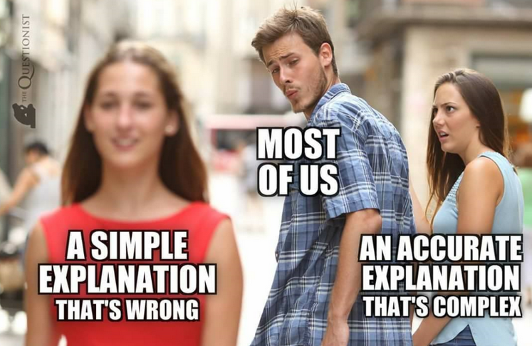
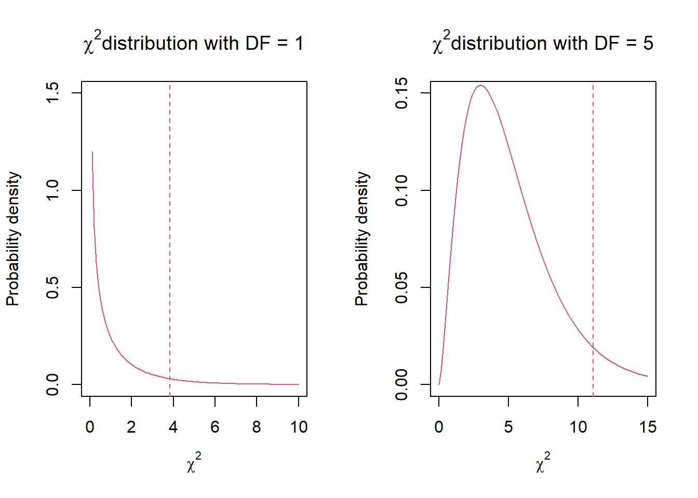

Chapter 5: Hypothesis testing and pattern detection; goodness-of-fit
Author
Jakub Těšitel
Scientific statements
In Chapter 1, I explained that science consists of theories, and these comprise hypotheses. Scientists formulate these hypotheses as universal statements describing the world, but they never know whether a hypothesis is true until it is rejected based on empirical evidence. This makes science an infinite process of searching for truth, which we hopefully approach but never know whether we reach it or not.
Let’s now return to the term universal statement I used in the previous paragraph and in Chapter 1 because this is crucial to understanding how empirical science works and how hypothesis testing proceeds. Statements describing the world can be classified into two classes:
Universal statements generally apply to all objects concerned. E. g. “All (adult) swans are white” is a universal statement. This can be converted to a negative form: “Swans of other colours than white do not exist.” You can see that the universal statements prohibit certain patterns or events (e.g. observing a black swan); therefore, they have the form of “natural laws”. They can also be used to make predictions. If the white swan hypothesis is true, the next swan I will see will be white (and this is not dependent on how many white swans I saw before). A universal statement cannot be verified, i.e. confirmed to be true. We would need to inspect the colour of all swans living on the Earth (and in the Universe) to do so, and even if we did so, we can never be sure that the next baby swan hatching from an egg would not be different from white at adulthood. By contrast, it is very easy to reject such a universal statement based on empirical evidence. Observing only a single swan of another colour than white is sufficient for that.
Singular statements are asserted only on specific objects. E.g. “The swan I see is white.” Such a statement refers to a particular swan and does not predict anything about other swans. A specific class of singular statements are existential statements that can be derived from singular ones. The fact that I see a white swan (singular statement) can be used to infer that there is at least one swan that is white, i.e. white swans do exist. Based on the previous paragraph, you would probably not consider any novel since it agrees with the universal statement on white swans. However, seeing a single black swan (Fig. 1) changes the situation completely. It means that at least one black swan exists and that the universal statement about white swans is not true. In general terms, this existential statement rejected the universal statement.
Hypotheses and their testing
Empirical science is essentially the process of hypothesis testing, which means searching for conflicts between predictions of hypotheses and collected/measured data. Once a hypothesis is rejected, a new hypothesis can be formulated to replace the old one. Note here that there is no “objective” way to formulate new hypotheses – they are rather genuine guesses.
An important implication from this is that it should be possible to define singular observations for every scientific theory or hypothesis that, if they exist, would reject it. This means that each scientific hypothesis must be falsifiable. Universal statements that are not falsifiable may be components of art, religion, or pseudoscience but definitely not of science.
Various conspiracy theories also belong to this class. These statements need not be only dogmatic; they may also be tautological. An example of this is e.g. recently published theory of stability-based sorting in evolution (Toman & Flégr 2017), a “theory” which says that evolution operates with stability, i.e. organisms and traits which are more stable persist for longer. The problem is that long persistence is a synonym for stability. Thus, this theory says, “What is stable is stable” - not very surprising. The authors declare the theory to explain everything (see the ending of the abstract), and this is indeed true. Still, the problem is that the theory neither produces any useful predictions nor can be tested by empirical data.
If we select only hypotheses that are falsifiable and can be considered scientific statements, we may discover that there are multiple theories without any conflicts with the data. It is a natural question to ask, which one to choose over the others. Here, we should use the Occam’s razor principle (Fig. 2) and use the simplest (and also most universal and most easily falsifiable) hypothesis available. This is also termed minimum adequate model – i.e. choose the model with the minimal number of parameters that adequately match the data.

Figure 2: Occam’s razor illustrated.
Pattern detection
Biological and ecological systems display high complexity arising from an interplay among complicated biochemical processes, evolutionary history, and ecological interactions. As a result, quite a large proportion of the research is exploratory, aiming at discovering effects that were not anticipated yet. Therefore, no previous theory could have informed about them, or such information on the absence of effect would be just redundant.
These are special cases of hypothesis testing, which can be called pattern detection. In pattern detection tests, we test the universal statement that the effect under investigation is zero (e.g. there is no correlation between two quantitative variables). Rejecting such a statement (null hypothesis) means that our observations are significantly different from what could be observed just by chance, i.e. we demonstrate the significance of a singular statement – and this can be consequently used to formulate a new universal hypothesis.
Hypothesis testing with statistics
In statistics, we work with numbers and probabilities. Therefore, we do not record clear-cut evidence to reject a hypothesis as in the example with swans. In other words, even unlikely events may happen by chance, and their observation may not be sufficient evidence to reject a hypothesis.
A general statistical testing procedure involves the computation of test statistic. The test statistic measures the discrepancy between the prediction of the null hypothesis and the data, also considering the strength of the evidence based on the number of observations.
The test statistic is a random variable, which follows particular theoretical distribution if the null hypothesis is true. As a result, the probability of observing the actual data or data that differ even more from the null hypothesis expectation can be quantified. If this probability (called the p-value) is below a certain threshold (\(\alpha\)), we can justify the rejection of the null hypothesis.
The probability of observing specific data under the null hypothesis can be very low but never zero. As a result, we are left with uncertainty concerning whether we made the right decision when rejecting or retaining the null hypothesis. In general, we may take either the right decision or make an error (Table 1).
Table 1: Possible outcomes of hypothesis testing by statistical tests. H0 = null hypothesis.
Reality
H0 is true
H0 is false
Our decision
Reject H0
Type I Error
OK
Not reject H0
OK
Type II Error
Two types of error can be made, of which Type I Error is more harmful because it means rejection of a null hypothesis which is actually true. This is called false positive evidence. It is misleading and may even obscure the scientific research on a given topic. By contrast, Type II Error (false negative) is typically invisible to anybody except to the researcher himself because results not rejecting the null hypothesis are usually not published. Statistical tools can precisely control the probability of making Type I Error by setting an apriori limit for the p-value. This limit, called the level of significance (\(\alpha\)), is typically set to \(\alpha\) = 0.05 (5%). If the p-value resulting from the testing is higher than that, the null hypothesis cannot be rejected. Note here that such a non-significant result does not mean that the null hypothesis is true. Non-significant results indicate the absence of evidence, not of the evidence of absence of an effect.
Concerning Type II Error (the probability of which is denoted \(\beta\)), statistical inference is less informative. It can be quantified in some controlled experiments, but its precise value is not of particular interest. Instead, a useful concept is the power of the test, which equals \(1 – \beta\) and its relative rather than absolute size. The power of the test increases with sample size and with decreasing \(\alpha\), i.e. if the tester accepts an elevated risk of Type I Error.
Goodness-of-fit
Let’s have a look at an example of a statistical test. One of the most basic statistical tests is called goodness-of-fit test (sometimes inappropriately chi-square test following the name of the test statistic). It is particularly suitable for testing frequencies (counts) of categorical data, although the \(\chi^2\) distribution is quite universal and approximates e.g. the very general likelihood ratio. The formula is this: \[
\chi^2 = \sum{\frac{(O - E)^2}{E}}
\] where \(O\) indicates observed frequencies and \(E\) indicate frequencies expected under the null hypothesis. The \(\sum\) is repeated for each of the categories under investigation. The \(\chi^2\) value is subsequently compared with the corresponding \(\chi^2\) distribution to determine the p-value. There are many \(\chi^2\) distributions that differ in the number of degrees of freedom (\(DF\); Fig. 3). The \(DF\) is a more general concept common to all statistical tests as it quantifies the size of the data and/or complexity of the model. Here, it is important to know that for ordinary goodness-of-fit test: \(DF\) = number of categories – 1.
Show R Script
par(mfrow =c(1,2))# Generate data for probability density curve, DF = 1curve(dchisq(x, df =1),from =0, to =10,ylim =c(0, 1.5),col =2,main =expression(paste(chi^2, "distribution with DF = 1")),ylab ='Probability density',xlab =expression(chi^2))abline(v =qchisq(p =0.95, df =1),col =2,lty =2)# Generate data for probability density curve, DF = 5curve(dchisq(x, df =5),from =0, to =15,ylim =c(0, 0.15),col =2,main =expression(paste(chi^2, "distribution with DF = 5")),ylab ='Probability density',xlab =expression(chi^2))abline(v =qchisq(p =0.95, df =5),col =2,lty =2)

Figure 3: Probability densities of two χ2 distributions differing in the number of degrees of freedom. Dashed line indicates cut-off values for 0.05 probabilities on the upper tail.
Show R Script
par(mfrow =c(1,1))
TipGenerate samples and obtain probabilities and quantiles from \(\chi^2\) distribution
dchisq() - density function
pchisq() - probability of obtaining concrete value (quantile) given the \(\chi^2\) distribution with given DF
qchisq() - value (quantile) obtained with given probability
rchisq() - random sample from \(\chi^2\) distribution with given DF
Goodness-of-fit test example
A typical application of the goodness-of-fit test is in genetics, as demonstrated in the following example:
You are a geneticist interested in testing the Mendelian rules. To do so, you cross red and white flowering bean plants. Red is dominant and white recessive, so in the F1 generation, you only get red flowering individuals. You cross these and get 44 red-flowering and 4 white-flowering individuals in the F2 generation.
What can you say about the universal validity of the second Mendelian rule (which predicts 3:1 ratio between dominant and recessive phenotypes) at the level of significance \(\alpha\) = 0.05?
First, you need to calculate the expected frequencies. These are:
then, compute the test statistics as follows: \[
\chi^2 = \sum{\frac{(O - E)^2}{E}}
\]\[
\chi^2 = \frac{(44 - 36)^2}{36} + \frac{(4 - 12)^2}{12} = \frac{64}{36} + \frac{64}{12} = 7.11
\] so, since we have: \[
DF = 1
\] then: \[
p_{(\chi^2 = 7.11, DF = 1)} = 0.007661
\]Conclusion (to be written in the text):
Heredity in our bean-crossing system is significantly different from the second Mendelian rule (\(\chi^2\)= 7.11, DF = 1, p = 0.0077). As a result, the second Mendelian rule is not universally true.
Here you can see that our experiment produced a singular statement on the number of bean plants. The statistics translated this into an existential statement that at least one (our) genetic system exists which does not follow the Mendelian rule. This was then used to reject the universal statement.
NoteHow to do in R
Goodness-of-fit test: chisq.test()
parameter x = observed frequencies/counts
parameter p = null hypothesis-derived probabilities
So, in our previous example, it would look like this:
chisq.test(x =c(44, 4), # observed countsp =c(3/4, 1/4)) # expected probabilities (the sum must be 1)
Chi-squared test for given probabilities
data: c(44, 4)
X-squared = 7.1111, df = 1, p-value = 0.007661
Probabilities of \(\chi^2\) distribution can be computed by pchisq() (do not forget to set lower.tail = F to get the p-value).
pchisq(q =7.11, df =1, lower.tail = F)
[1] 0.007665511
Excercises
Color preferences of bees were studied. The bees were released one by one to a room with four circles of different colors. The color of the circle to which each bee first landed was recorded. The results were the following: red 10, yellow 25, blue 18, green 6. Do the bees prefer any color?
The expected phenotype ratio AB:Ab:aB:ab in the F2 generation (AABB x aabb) is 9:3:3:1. The real numbers were as follows: 125, 60, 50, 12. Are the ratios different from those expected under Mendel’s rules?
The invertebrate community at a meadow consists of 1200 flies, 200 butterflies, 650 bees, and 200 snails. Lizard food preference for these groups of invertebrates is investigated in a research project. 41 flies, 5 butterflies, 30 bees, and 2 snails are identified as lizard prey. Do the lizards show any preference for these types of prey?
What is the Type I Error probability corresponding to \(\chi^2\) = 5.04 and DF = 3.
Which values of \(\chi^2\) with 3 degrees of freedom are required for a significant test at \(\alpha\) = 0.05 and \(\alpha\) = 0.01. Which values of \(\chi^2\) are required for the same significance levels at 8 degrees of freedom?
In the F1 hybrid generation (AA x aa), all individuals were expected to display the dominant phenotype. Three individuals in 2000 had the recessive phenotype. Is this result different from expectation?
#AI Ask your favourite LLM to solve any of the tasks 1-6 and compare the results with those obtained by R.
Tasks for independent work
You are an insurance agent running a car insurance business. There are 12 000 blue, 5 600 red, 1 300 yellow, and 8 700 black cars registered in your region. The accident report indicates that 324 blue, 20 red, 20 yellow, and 298 black cars were involved in accidents over the past five years. Would you consider car color as a significant predictor of car accidents?
5 kinds of beer were available at a university music festival (with continuous supply, so theoretically unlimited). Beer was served exclusively in 0.5 l glasses, and the price and the speed of serving did not differ among the beers.
Is there any significant preference for some beers? Which beers are preferred? Which beer do you prefer?
Beer
Number of glasses
Starobrno 12°
120
Starobrno 11°
180
Pilsner Urquell
150
Bernard 12°
320
Polička 11°
450
Johann Gregor Mendel performed crossing experiments with red- and white-flowering peas. First, he crossed a red-flowering dominant homozygote with a white-flowering recessive homozygote. All the offspring were red-flowering heterozygotes. Of these, he selected two and crossed them again. The offspring consisted of 390 red-flowering plants and 103 white-flowering plants. Are these results significantly different from the expected 3:1 ratio?
A sex ratio of 1:1 is expected in mammals. Female-biased 6:4 ratio is observed in squirrels. Is that significantly different from 1:1 if observed on a sample of 10, 100, and 1000?
Colour of fruits (achenes) in sunflowers is a genetically determined trait based on two co-dominant alleles. That is, dominant homozygotes have black achenes, recessive homozygotes have whitish achenes, and heterozygotes have grey achenes. In a crossing experiment, the F2 generation of hybrids included 19 black-achened plants, 61 grey-achened plants, and 25 whitish-achened plants. Do these counts significantly differ from the 1:2:1 ratio expected based on the Mendelian rules?